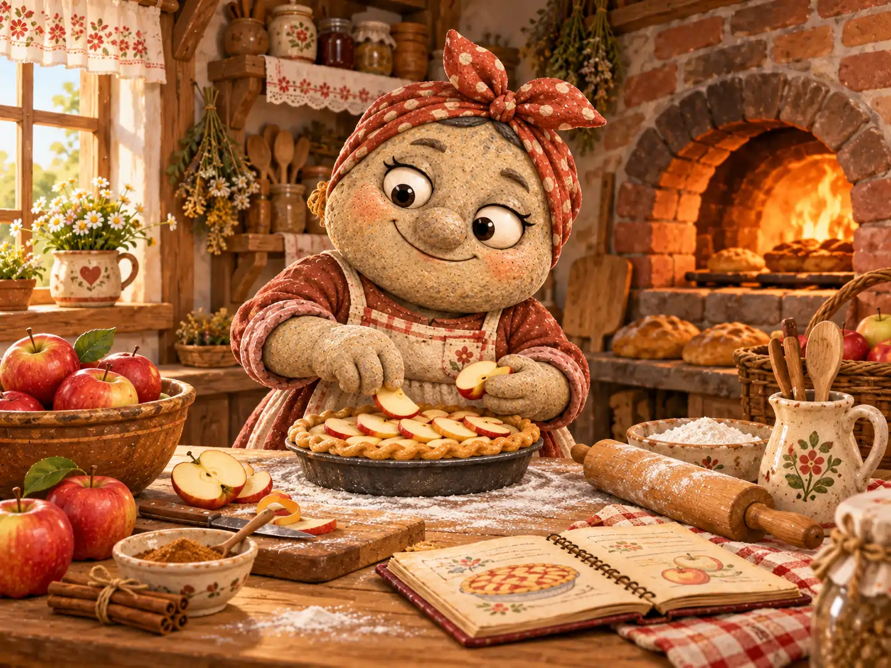
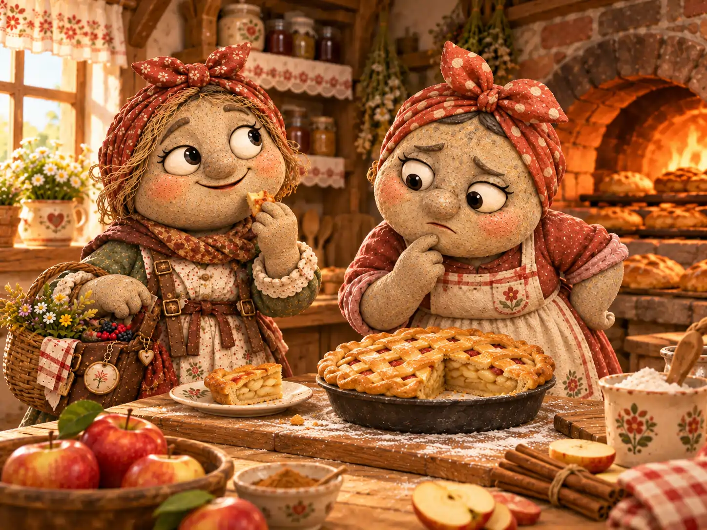
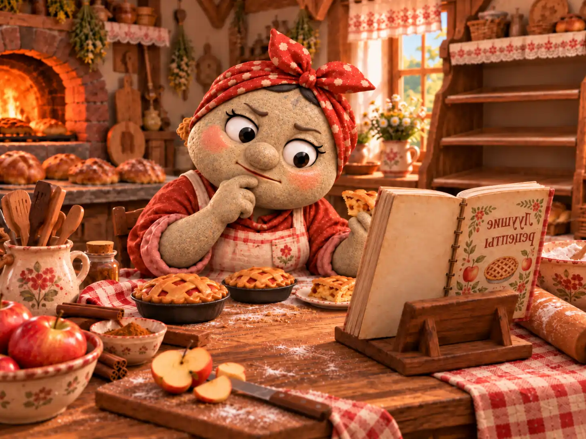
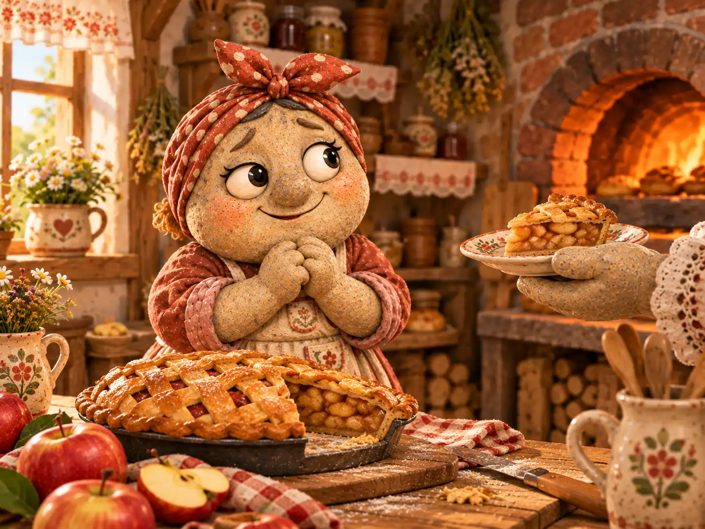

По утрам в Галькино было легко найти пекарню, даже не зная дороги. Нужно было просто идти на запах тёплого хлеба. Он тянулся вдоль заборов, заглядывал в открытые окна и доходил до ярмарочной площади раньше первых покупателей.
Марфа Крошкина принималась за работу ещё до рассвета. Сначала растапливала печь, затем просеивала муку, которую привозил с мельницы Прохор Мельников, и раскладывала на столе всё необходимое. Банки с корицей и мёдом стояли в одном порядке, сито висело на своём крючке, а полотенца были сложены ровными стопками. Марфа помнила, сколько нужно месить тесто, когда доставать противень и каким должен быть звук у готовой корочки.
Она пекла хлеб, ватрушки, булочки и самые разные пироги. Особой любовью пользовались яблочные: с тонкой плетёнкой из теста, мягкой начинкой и маленькими листочками по краям. Жители часто говорили, что у Марфы всё получается замечательно. Но сама пекарь всегда замечала то, чего не замечали остальные: один листочек вышел толще другого, корочка поднялась чуть выше с одной стороны, а в начинке яблоки попались неодинаковые.
«Переделаю ещё раз», — решала Марфа, даже если покупатели уже были совершенно довольны.
И всё же не ради ровных краёв она так старалась. У Марфы была мечта: однажды испечь пирог, который попробует и похвалит её мама. Та тоже прекрасно разбиралась в выпечке, и её мнение значило для Марфы больше любых наград. Ей хотелось услышать от мамы простые слова: «Очень вкусно» — и знать, что они сказаны именно про её пирог.

✦ ✦ ✦
Однажды Тимофей Булыжников принёс Марфе письмо. Она узнала почерк на конверте ещё до того, как сняла печать.
Мама писала, что через неделю заглянет в гости.
Марфа улыбнулась и тут же достала свою тетрадь с рецептами. Лучшего случая исполнить мечту не придумать. На отдельной странице она вывела: «Яблочный пирог для мамы» — и подчеркнула название.
В тот день пекарь как раз закончила большую партию яблочных пирогов. Первый она разрезала для посетителей. Тесто приятно хрустнуло под ножом, из начинки поднялся душистый пар, и Дарья Копейкина, зашедшая из своей лавки, попросила кусочек к чаю.
— Вкусно, — сказала Дарья, попробовав. — Только пирог сегодня какой-то не такой, как в прошлый раз. Яблоки чуть плотнее.
Она произнесла это без всякого упрёка, а потом спокойно доела кусочек. Но Марфа уже смотрела на разрезанный пирог так, словно впервые его увидела.
— Не такой? — уточнила она.
— Ну да. Может, яблоки другие? — предположила Дарья. — Мне и так нравится.
Марфа поблагодарила её, однако слова «не такой» никак не выходили из головы. Если разницу заметила Дарья, значит, мама наверняка заметит тоже. А вдруг пирог окажется слишком сухим? Или корица перебьёт запах яблок? И как узнать, какой вариант действительно лучше?
До вечера Марфа сравнивала записи и разглядывала оставшийся пирог. Наутро она собиралась испечь новый, с более мягкой начинкой. Потом решила, что сначала нужно разобраться с сортами яблок. Так на прилавке, рядом со свежим хлебом, появилось свободное место — там, где обычно стояли пироги.

✦ ✦ ✦
На следующий день Марфа взяла яблоки из нового урожая, которые принесла Василиса Камушкина. Они были сочные, с крепкой мякотью и приятной кислинкой. В первом пробном пироге яблоки сохранили форму, но тесто снизу оказалось влажнее обычного. Марфа записала результат и решила изменить толщину ломтиков.
Во второй раз начинка вышла мягче, зато слой теста показался ей слишком толстым. Тогда она уменьшила количество теста, а заодно убавила корицу. Результат стал другим, но понять, какое из двух изменений помогло, было уже невозможно.
Марфа зачеркнула несколько строк в тетради. Переделывать работу ей было не впервой, только теперь каждая новая попытка открывала следующую мелочь, которую хотелось исправить. Вместо больших пирогов она выпекала небольшие пробные порции, сравнивала их вкус и записывала время приготовления.
Хлеб, булочки и ватрушки по-прежнему появлялись на прилавке каждое утро. А вот пирогов не было.
Поначалу жители решили, что Марфа просто занята. Но на третий день Егор Тихонов, вернувшись с реки, заглянул в пекарню и спросил, когда можно будет купить ягодный пирог. Марфа ответила, что сначала закончит с яблочным. На пятый день за пирогами пришёл Тимофей — и тоже ушёл с одними булочками.
— Ты хотя бы записала, каким был тот пирог, который все любили? — поинтересовался почтальон.
— Разумеется, — ответила Марфа и показала тетрадь. — Вот первоначальный рецепт. А рядом — всё, что в нём можно улучшить.
Тимофей заглянул в страницы, исписанные мелким почерком.
— Тут улучшений больше, чем яблок в саду Василисы.
Марфа невольно улыбнулась, но тетрадь не закрыла.
К концу недели в пекарню зашёл староста Савелий Уступкин. Он не стал спрашивать, почему Марфа столько работает: это было видно и по муке на столе, и по усталому виду пекаря.
— В деревне скучают по твоим пирогам, — сказал Савелий. — Вчера на площади вспоминали яблочный, сегодня спрашивали про капустный. Может, ты испечёшь тот, что делала раньше?
— Но я ещё не нашла лучший рецепт.
— А прежний был плохим?
Марфа посмотрела на тетрадь. Нет, плохим он не был. Жители любили его, и сама она ещё недавно считала рецепт удачным.
— Просто я знаю, что могу лучше, — тихо сказала она.
— Тогда пробуй дальше, — ответил Савелий. — Только не забывай, ради кого ты печёшь.
Вечером Марфа впервые за несколько дней прибрала рабочий стол без новых исправлений. Она отложила записи с опытами и открыла страницу, где был записан её старый яблочный пирог. На полях уже стояло множество пометок, но посреди страницы рецепт оставался простым и понятным.

✦ ✦ ✦
На восьмой день, когда мама должна была прийти в гости, Марфа встала особенно рано. Она решила испечь один большой пирог по проверенному рецепту, внеся лишь одно изменение: яблоки нового урожая нарезала немного тоньше, чтобы они успели стать мягкими. Тесто раскатала привычным движением, посыпала начинку корицей и аккуратно закрыла плетёнкой.
Из печи пирог вышел румяным и душистым. Правда, у одного края плетёнка слегка разошлась, а листочек из теста наклонился в сторону. Марфа взяла нож, чтобы срезать неровность, потом остановилась. Пирог уже был готов. Исправление ничего не добавило бы к его вкусу.
В дверь постучали.
Мама вошла, сняла дорожную накидку и сразу почувствовала знакомый аромат.
— Как здесь хорошо пахнет! — сказала она. — Это для меня?
— Для тебя, — ответила Марфа. — Только он получился не совсем ровный.
— Я пришла попробовать пирог, а не измерять его края.
Марфа рассмеялась, хотя всё ещё немного волновалась. Она отрезала кусочек и положила перед мамой на тарелку. Корочка тихо хрустнула, яблоки внутри были мягкими, но не расползались, и от начинки поднимался тонкий запах корицы.
Мама попробовала. Потом отломила ещё маленький кусочек, чтобы лучше почувствовать начинку.
— Очень вкусно, Марфа. И яблоки в самый раз.
Марфа выдохнула. Она столько раз представляла этот момент, что теперь не сразу нашлась с ответом.
— А тебе не кажется, что тесто можно сделать чуть тоньше?
— В следующий раз попробуешь и узнаешь, — сказала мама. — А сегодня давай съедим этот, пока он тёплый.
Марфа посмотрела на пирог. Неровный листочек по-прежнему лежал сбоку. Но мама уже взяла второй кусочек, и ей не нужно было объяснять, сколько попыток стояло за этим простым угощением.

В тот же день Марфа испекла ещё несколько яблочных пирогов для жителей деревни. Тех самых, что обещала приготовить уже неделю. У пекарни снова появилась очередь. Дарья попробовала кусочек и заметила:
— Вот теперь яблоки мягкие. А в прошлый раз, между прочим, тоже было вкусно.
— Знаю, — сказала Марфа после небольшой паузы. — Просто мне хотелось убедиться самой.
Наутро она вновь открыла тетрадь. Аккуратно записала сорт яблок, время выпечки и две мысли о том, как ещё можно улучшить тесто. Затем закрыла тетрадь и принялась готовить пироги к открытию пекарни. Проверять новые идеи она собиралась позже, когда закончит с заказами.
Марфа не перестала быть требовательной к себе. Она по-прежнему могла заметить маленький недостаток там, где другие видели чудесную выпечку. Но теперь хотя бы иногда позволяла себе оставить удачный пирог удачным — и не лишать деревню угощения из-за одного неровного листочка.
✦ ✦ ✦
Позже в Почтовом архиве Галькино появилась запись:
«Марфа Крошкина на неделю прекратила продавать пироги, разыскивая идеальный рецепт. На восьмой день испекла яблочный пирог, который похвалила мама. Продажу пирогов возобновила. Работа над рецептом продолжается, но без перерыва в снабжении деревни».
К записи Марфа не придралась. Только попросила не называть рецепт идеальным окончательно: у неё оставалась ещё одна мысль насчёт теста.